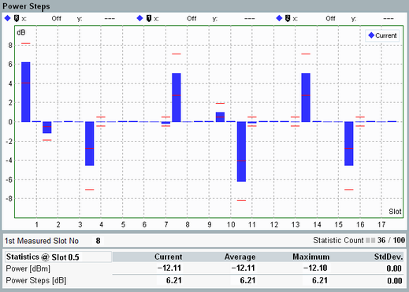

Detailed Views: UE Power and Power Steps
Each of the detailed views shows a diagram per carrier and a statistical overview of single-slot results.

WCDMA multi-evaluation: power steps (with HSPA channels, test case TPC 0 dB)
- Power
Transmitter output power of the UE, measured in a bandwidth of at least (1+α) times the chip rate, where α is the roll-off factor of the WCDMA channel filter. The UE power corresponds to the mean power defined in 3GPP TS 34.121.
The diagram covers a time interval of up to 120 slots. The "Current" traces contain one measurement result per slot or half-slot. Each result is calculated as the average of all samples in the slot or half-slot, excluding a 25 μs guard period at the beginning and at the end. - Power steps
The bar graph covers a time interval of up to 120 slots. For each slot boundary, it displays the difference between the UE power of the previous and the next slot (for a half-slot measurement period: the difference between the previous and next half-slot for each half-slot boundary).
The example above shows a half-slot measurement. The red limit lines display the limit ranges resulting from the HS-DPCCH limit set with test case TPC 0 dB, see "Power Control Limits".
For additional information, refer to "Common View Elements".
Additional UE power and power step measurements of release 99 uplink signals are provided by the TPC measurement, see "WCDMA TPC Measurement".